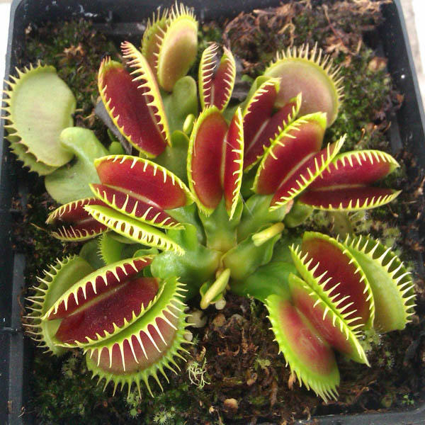

Euterpe precatoria es una especie botánica de palmeras, conocida comúnmente como palmito, manaca, chonta, asaí de la selva o huasaí; nativa de Sudamérica, específicamente de la Amazonía ecuatoriana,peruana, boliviana y brasileña. Está distribuida también por Centroamérica, las Antillas y el norte de Suramérica.

Comparettia es un género de orquídeas. Tiene 78 especies distribuidas en Sudamérica. Son epífitas pequeñas; pseudobulbos teretes de 8 mm de largo y 4 mm de ancho, revestidos de 1–2 vainas, 1-foliados. Hoja 7 cm de largo y 2 cm de ancho, conduplicada en la base, coriácea. Inflorescencia un racimo con pocas flores, emergiendo desde la base del pseudobulbo, el pedúnculo rojizo, la bráctea triangular, 3 mm de largo

La flor de mayo o lirio de mayo pertenece a la familia de las orquídeas, es una planta epífita de hojas carnosas, originaria principalmente de Colombia, aunque su distribución llega hasta Ecuador.

Posee un sombrero de 5 a 15 cm, marrón, azul o violáceo y su forma puede ser desde convexa a aplanado, con el margen enrollado. La cutícula de color azul o violácea con las láminas muy finas y apretadas, que se desprenden fácilmente del resto del sombrero. Pie de forma cilíndrica, color azulado fibrado y con base bulbosa. Carne frágil y tierna, tiene un olor y sabor agradables, pero es venenosa en crudo.

Protium es un pequeño género de plantas de flores perteneciente a la familia Burseraceae, nativo del norte de Sudamérica y sur de Asia desde Pakistán a Vietnam. El género tiene unas 80 especies y está estrechamente relacionado con Bursera. Comprende 186 especies descritas y de estas, solo 73 aceptadas.

Una planta carnívora es una planta que obtiene parte o la mayoría de sus necesidades nutricionales mediante la captura y el consumo de protozoos y animales, especialmente insectos.

Bauhinia glabra, también conocida comúnmente como el escalón / escalera de mono, se introduce más a menudo con su nombre aceptado, mientras que Bauhinia cumanensis, es un sinónimo del nombre de la planta.

Aechmea orlandiana es una especie botánica de bromélida típica de la flora de la selva Amazónica en Brasil, muy usada como planta ornamental. Esta especie perenne está citada en Flora Brasiliensis por Carl Friedrich Philipp von Martius

Phragmipedium caudatum es una especie de la familia de las orquídeas, de hábito terrestre, epifítico o litofítico, que se distribuye desde México a Bolivia. Se caracteriza por la longitud de los espolones o caudas de sus pétalos, la que la convierten en la orquídea de flores más largas.